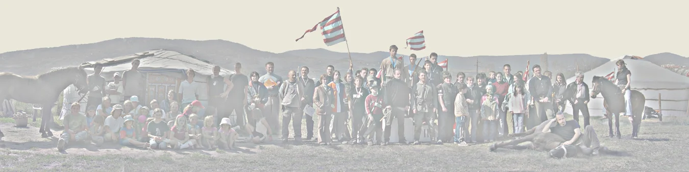

Az egyesület célja, feladata
Az egyesület célja:
- A tradicionális magyar harcművészetnek, íjászatnak és lovasíjászatnak, mint sporttevékenységnek -szervezett kereteken beül történő- gyakorlása, népszerűsítése. Az egyesület a a lovasharcművészet, lovasíjászat iránt érdeklődő minden korosztály számára elősegíti, támogatja, oktatja a tevékenység gyakorlását.
- A természettel való kapcsolattarás, a természetes életmód lehetőségeink kutatása, tanulmányozása, népszerűsítése, illetőleg tapasztalatok szerzése ezzel kapcsolatban.
- Életmód tanácsadás.
- Kulturális hagyományőrzés (különös tekintettel a katonai kultúrára és hagyományokra).
- Értékközvetítés.
- A lovaglásnak és az íjaszatnak a mentális- és a technikai civilizáció okozta zavarokkal küzdő gyermekek és fiatalok problémáinak kezelésére történő alkalmazása.
- Hátrányos helyzetű fiatalok kulturáliséletének változatosabbá tétele.
- Szentendre és környéke X. század előtti történelmi múltjának kutatása és népszerűsítése.
-Közösségfejlesztés.
Az egyesület működése során, céljai megvalósítás érdekében:
Sportrendezvényeket szervez, utánpótlást nevel.
Tagjai számára folyóiratot szerkeszt, szemináriumokat tart, vitaesteket, képzéseket szervez.
Oktatással, tanulmányutak szervezésével, könyvtár fenntartásával biztosít lehetőséget a tagok ismereteinek bővítésére.
Tanulmányokat, elemzéseket készít, készíttet Szentendre és környéke X. század előtti történelmi múltjáról.
Rendezvényeket szervez.
Megismerteti a tagsággal a lovaglás és az íjászat kultúráját, hagyományait.
Forrásainak mértékéig a Szervezeti és Működési Szabályzat szerint támogathat minden kezdeményezést, amely céljainak megfelel, illetve erkölcsi és anyagi megbecsülését kinyilvánítja mindazon személyekkel és szervezetekkel kapcsolatban, akik, vagy amelyek megítélése szerint egy meghatározott időszakban a legtöbbet tettek céljainak megfelelően.
Együttműködik hasonló célú egyesületekkel és külön megállapodások alapján kormányzati, államigazgatási szervekkel, önkormányzatokkal, munkaadókkal, valamit más hasonló célú intézményekkel, kapcsolatot tart hasonló célú külfiöldi alapítványokkal, intézményekkel, társaságokkal.
Kapcsolatot és együttműködést épít ki a külföldön működő hasonló célú egyesületekkel.
Az egyesület a társadalom és az egyén érdekeinek kielégítésére a következő közhasznú tevékenységet látja el:
- tudományos tevékenység, kutatás;
- nevelés és oktatás, képességfejlesztés, ismeretterjesztés;
- kulturális tevékenység;
- kulturális örökség megóvása;
- műemlékvédelem;
- természetvédelem, állatvédelem;
-a határon túli magyarsággal, valamint a magyarországi nemzeti és etnikai kisebbségekkel kapcsolatos tevékenység;
-közhasznú szervezetek számára biztosított - csak közhasznú szervezetek által
igénybe vehető – szolgáltatások.
Az egyesület nem zárja ki, hogy tagjain kívül más is részesülhessen a közhasznú szolgáltatásaiból. Az egyesület közhasznú szolgáltatásaiból így a tagokon kívül is bárki részesülhet az egyesület belső szabályzatainak, illetve a konkrét szolgáltatás igénybevételi feltételeinek megfelelően.
Az egyesület tagja lehet bárki (minden olyan magánszemély, jogi személyiségű és nem jogi személyiségű szervezet) aki az alapszabályban elfogadott célokkal egyet ért, és az írásban az Elnökséghez beadott belépési nyilatkozatát az Elnökség elfogadja. A nem természetes személy tag az egyesületnél képviselője útján jár el.
Belépési nyilatkozatában a felvételét kérő tag kijelenti, hogy az alapszabály rendelkezéseit ismeri, azokkal egyet ért, magára nézve kötelezőnek fogadja el, vállalja, hogy az egyesületi célok megvalósításában közreműködik, a tagsági viszonyból eredő kötelezettségeit teljesíti.
Az egyesület közvetlen politikai tevékenységet nem folytat, szervezete pártoktól független és azoknak anyagi támogatást nem nyújt, azoktól támogatást nem kap, illetve nem fogad el, országgyűlési, fővárosi, megyei önkormányzati választáson képviselőjelöltet nem állít, illetve nem támogat.

LOVASHARC.HU
{kind=link}